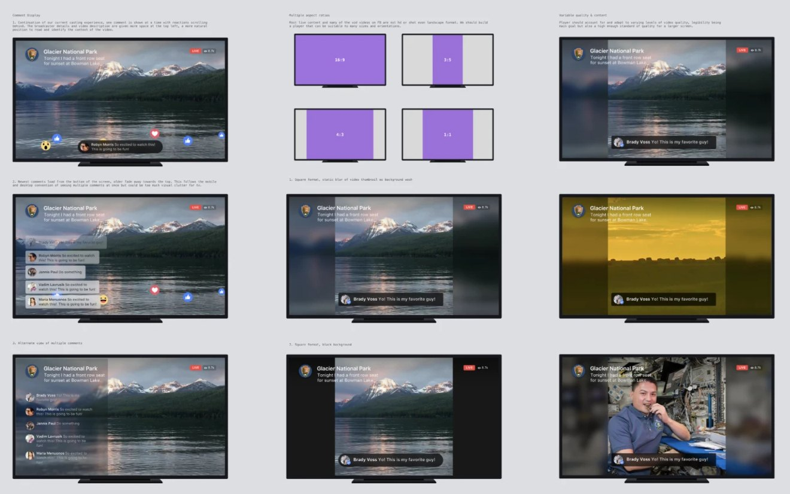

Facebook TV App
One of my first projects at Facebook was designing a standalone TV app. Company strategy was shifting toward video and episodic content, and we wanted to keep up with the streaming competitors.
There were many lengths and types of video on the platform, and people weren’t used to using their TV for Facebook (yet). The goal was a simple, intuitive, and fun TV app so long form content could be easily enjoyed and shared with friends and family.
Shipped on Apple TV, web, and other OTT devices as the Facebook Watch app.
Making sure live videos and comments worked in any aspect ratio was going to be key to the retention of the app.
Most live video on Facebook wasn’t HD or even landscape, so the player had to hold up at 16:9, 4:3, square, and vertical, and at whatever quality the broadcaster could manage on a big screen. I tried filling the empty space with a blurred frame of the video or plain black, and a few ways to show comments: one at a time with reactions floating past, a stack where new comments rise from the bottom and older ones fade out, and a column down the side.

Building off of standard tvOS navigation patterns, I started by keeping the layout somewhat dense to show variety.
Showing one video at a time and using reactions to help train better recommendations. This was optimized for short videos, but UX research showed that relevancy matters most.
Building quick HTML versions with the engineering team let us see how other OTT devices would behave, beyond what Apple TV offered for navigation and other features.
Showing videos big enough in the autoplay position, so people could let the app show them something good on open. The lower rows helped people dive deeper if they wanted something else to watch.
Design at 10 feet
Early on I started prototyping from my couch to make sure the scale and layouts were accurate on a TV screen, so the app felt right at the distance it was viewed.
Don’t wait for feedback
We had several executive and stakeholder reviews, but grabbing leads as they walked by or showing them an early demo built excitement and helped narrow directions.
Find common expertise
I met with anyone who had TV or OTT design or engineering experience as I iterated, and learned a lot in a short amount of time from other teams.